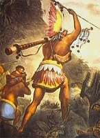
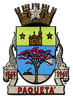
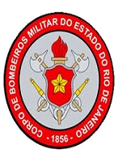
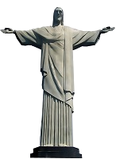

Curiosidades sobre o Rio Antigo
-
Índios Tapuias

Tapuia é um termo de origem tupi que foi utilizado durante o período inicial de colonização do Brasil para designar todos os indígenas que não falavam o tupi antigo. Os indígenas falavam línguas pertencentes a dois troncos linguísticos da América do Sul: o tupi e o macro-jê.
-
França Antártica

A França Antártica foi uma colônia francesa estabelecida na região da Baía do Rio de Janeiro no século XVI, com o apoio dos tamoios, existindo de 1555 a 1570, quando os últimos remanescentes da aliança franco-tamoia foram derrotadas na Batalha do Cabo Frio.
-
Corpo de Bombeiros

O Corpo de Bombeiros Militar do Estado do Rio de Janeiro é uma Corporação cuja principal missão consiste na execução de atividades de defesa civil, prevenção e combate a incêndios, buscas, salvamentos e socorros públicos no âmbito fluminense.
-
Cristo Redentor

Cristo Redentor é uma estátua art déco que retrata Jesus Cristo, localizada no topo do morro do Corcovado, a 709 metros acima do nível do mar, no Parque Nacional da Tijuca. Em 2007 foi eleito informalmente como uma das sete maravilhas do mundo moderno.